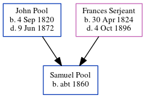

Samuel R Pool c1860 -
[ Home ] | [ Calendar ] | [ Surnames Index ] | [ Census Index ] | [ Family History ]The child of John Pool and Frances Serjeant, Samuel Pool, the second cousin four-times-removed on the mother's side of Nigel Horne, was born in Indiana, USA c. 1860.
During his life, he was living in Clay, Indiana, USA on Jun 1, 18602; and in Lewis, Indiana in 18701 and on Jun 1, 18703.
Parents
- John Edward was born on Sep 4, 1820
- Frances Elizabeth was born on Apr 30, 1824
Citations
- US Census 1870 - Findmypast
- US Census 1860 - Findmypast (was age 0 and the son of the head of the household)
- US Census 1870 - Findmypast (was age 10 and the son of the head of the household)
Media
1870 US Census Transcription - USC-1870-004263289-00218-030
Family Tree
Generated by ged2site. Last updated on Jun 11, 2024